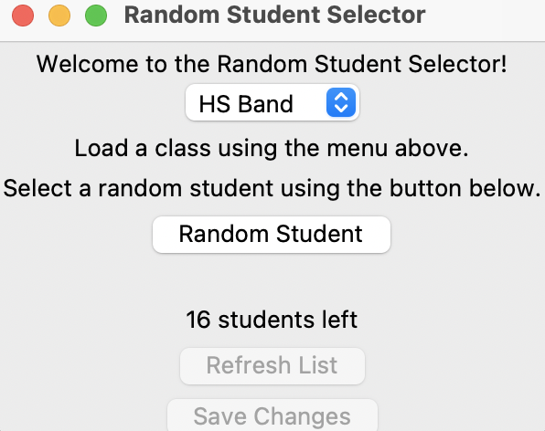
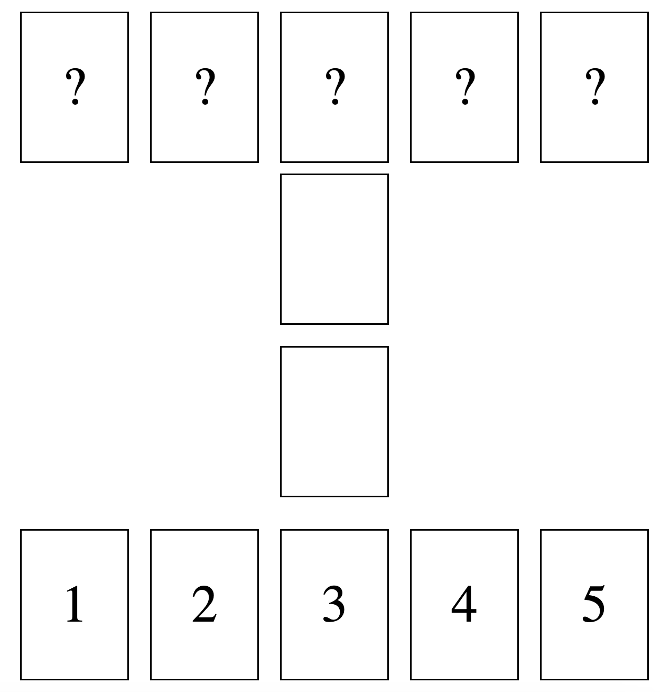
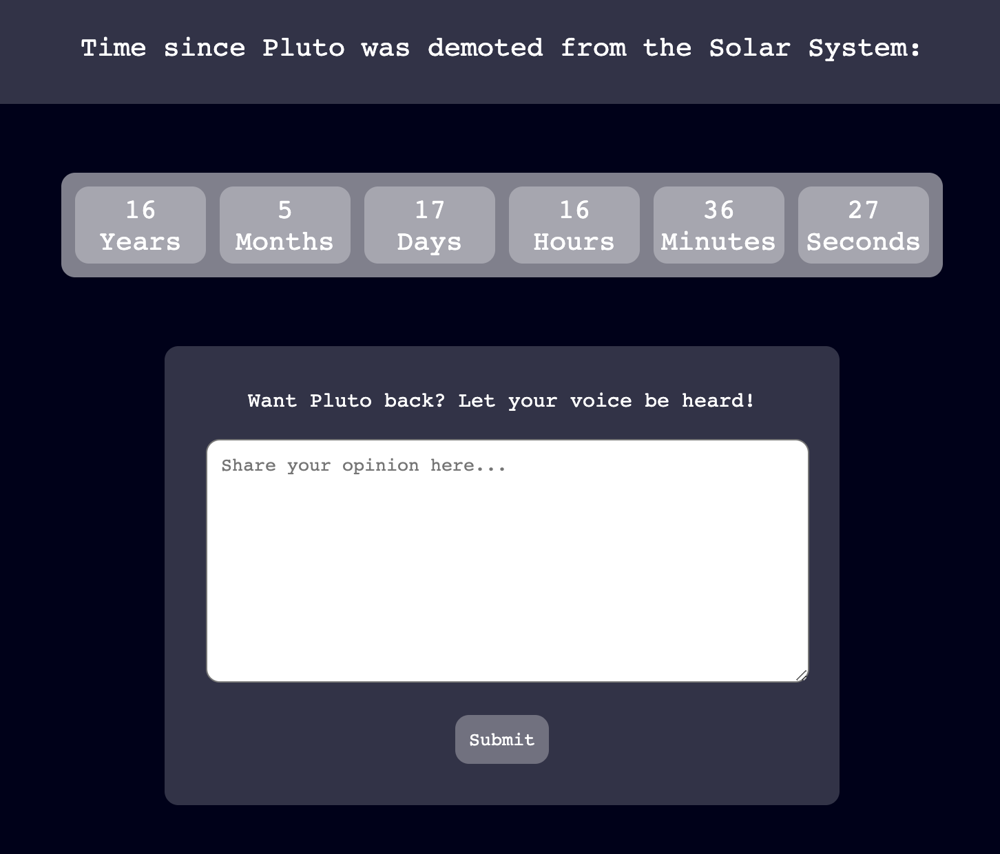
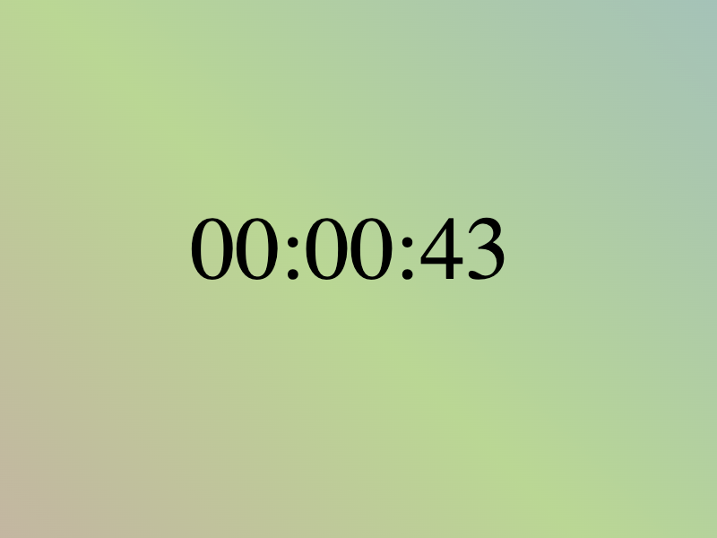

My Projects
Random Student Generator

By importing class lists from a separate file, the user
is able to randomly select a student from the class list.
The randomizer tracks which students have already been
selected, and the selections can be saved so that the
randomizer remembers which students it selected during
previous sessions. This project was designed using Python
and Tkinter.
Card Game

A simple card game. Both the user and the computer
have cards numbered 1-10 in their hands. The player
with the highest card adds both cards to their hands.
If there is a tie, both cards are removed from the game.
This project was designed using HTML, CSS, and Javascript.
Pluto Demotion Timer

A counter that shows the exact amount of time since Pluto was
declared a dwarf planet. The counter updates in real time. Also
features a contact form for those who would like to petition for
Pluto's reinstatement. This project was designed using HTML, CSS, and Javascript.
Timer

A simple timer that begins counting up from zero once the
page loads. The multi-colored background generates randomly
upon each load and changes gradually over time. This project
was designed using HTML, CSS, and Javascript.